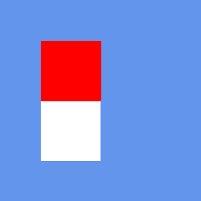
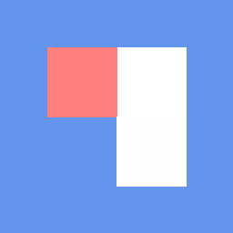
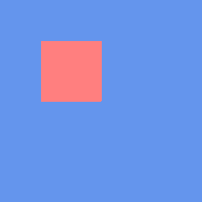
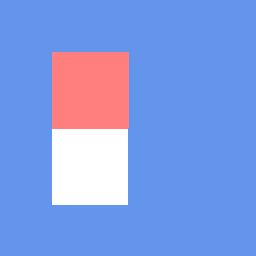

Tutorial 54: AlphaTestEffect and Alpha Masking
What you’ll learn
- Configuring
AlphaTestEffect, itsAlphaFunctionandReferenceAlpha. - Why cutout foliage wants alpha testing rather than alpha blending.
- Where vertex colour fits in.
Before you start — Tutorial 32: BasicEffect and 3D Lighting (the stock effect family) and Tutorial 22: Blend Modes and Alpha Compositing (the blending this is an alternative to). Requires a 3D-capable renderer such as OPENGLES3 or VULKAN; the thirteen 2D-only renderers (SDL_RENDERER, DIRECT2D, CANVAS, HTML_DOM, SKIA, BLEND2D, FREEDIRECT, DIRECTX1, GDI, SVG_DOM, OPENVG, NANOVG, PIXIJS) throw on 3D calls.
AlphaTestEffect is one of CNA's built-in effects that replicates the XNA 4.0 alpha-test pipeline. Instead of using the fixed-function alpha test that was available in older GPU APIs, CNA implements it as a shader-level discard instruction in the fragment shader. A pixel is either fully kept or fully discarded based on whether its texture alpha passes a programmable comparison against a reference threshold. This technique — commonly called alpha masking or clip-alpha — is essential for rendering foliage, fences, decals, and other cutout geometry efficiently without the sorting overhead required by true alpha blending.
AlphaTestEffect Properties
AlphaTestEffect exposes a focused set of properties that mirror the XNA 4.0 API exactly. Below is a summary of each property and its purpose:
- Texture —
setTextureProperty(Texture2D*). The diffuse texture whose alpha channel drives the masking decision. An RGBA texture is required; RGB-only textures will always produce an alpha of 1.0, making all pixels pass the test. - Alpha —
setAlphaProperty(float). A global alpha multiplier in the range [0, 1] applied to the entire surface before the per-pixel test. Combined with vertex alpha and texture alpha before comparison. - DiffuseColor —
setDiffuseColorProperty(Vector3). A linear RGB tint multiplied into the final output colour. Does not affect the alpha test comparison itself. - FogEnabled / FogColor / FogStart / FogEnd — Optional depth-based linear fog.
setFogEnabledProperty(bool)toggles it.setFogColorProperty(Vector3),setFogStartProperty(float),setFogEndProperty(float)control the gradient. The fog factor is computed per-vertex and interpolated to the fragment. - VertexColorEnabled —
setVertexColorEnabledProperty(bool). When true, expectsVertexPositionColorTexturevertices and multiplies the per-vertex colour (including its alpha) into the test. - World / View / Projection —
setWorldProperty(Matrix),setViewProperty(Matrix),setProjectionProperty(Matrix). Standard transform matrices uploaded to the vertex shader.
AlphaFunction Enum
The CompareFunction enum (the same enum used by depth and stencil tests) controls how the fragment alpha is compared against the reference value. Pass it to setAlphaFunctionProperty(CompareFunction). The fragment is discarded (clipped) when the comparison fails:
| CompareFunction value | Pass condition | Typical use case |
|---|---|---|
Always | Every fragment passes. | Effectively disables alpha masking; use for opaque surfaces. |
Never | No fragment passes. | Invisible surface (can be useful for shadow receivers that should not colour the buffer). |
Less | alpha < reference | Keep only nearly-transparent pixels — unusual but useful for inverse masks. |
LessEqual | alpha ≤ reference | Keep pixels up to and including the threshold. |
Equal | alpha == reference | Rare; requires exact alpha values (palette textures). |
GreaterEqual | alpha ≥ reference | Keep pixels at or above the threshold — the most common setting for cutout foliage. |
Greater | alpha > reference | Keep pixels strictly above the threshold; reference = 127 keeps alpha 128–255. |
NotEqual | alpha != reference | Discard pixels at exactly one alpha value; useful for palette-keyed transparency. |
The most practical combination for foliage is CompareFunction::Greater with ReferenceAlpha = 128. This keeps all fragments whose alpha (after texture sample and per-vertex multiplication) is greater than 128 out of 255, cleanly discarding semi-transparent fringe pixels caused by texture filtering at leaf edges.
Each comparison, rendered by the real XNA runtime
The images below are not mock-ups. Each one is the output of the genuine Microsoft XNA 4.0 runtime, produced by the C#/XNA reference renderer in CNA's oracle corpus (tools/xna-oracle/). CNA's DIRECTX9 renderer renders the same scene and is diffed against these images at --tolerance 0, so they are simultaneously the correct picture of each comparison and the evidence that CNA reproduces it. Each scene draws quad regions of differing alpha over a cornflower-blue clear; whichever regions fail the comparison are discarded and the background shows through. See the oracle corpus for how the diff works.

The baseline scene — the default Greater test at the reference alpha keeps the two left regions and clips the rest. Real XNA 4.0 output; CNA's DIRECTX9 renderer matches it pixel-for-pixel. That is a DIRECTX9 statement — it matches all 39 oracle scenes at tolerance 0, where other renderers match far fewer.
Always — every fragment passes, so all four regions survive regardless of alpha. Real XNA 4.0 output; CNA matches it pixel-for-pixel.
Never — every fragment is discarded, leaving only the clear colour. Real XNA 4.0 output; CNA matches it pixel-for-pixel.
Less — the exact inverse of the baseline: only the low-alpha regions survive. Real XNA 4.0 output; CNA matches it pixel-for-pixel.

LessEqual — adds the region sitting exactly at the reference alpha to what Less keeps. Real XNA 4.0 output; CNA matches it pixel-for-pixel.

Equal — only the one region whose alpha is exactly the reference value survives. Real XNA 4.0 output; CNA matches it pixel-for-pixel.

GreaterEqual — the usual cutout-foliage setting; keeps everything at or above the threshold. Real XNA 4.0 output; CNA matches it pixel-for-pixel.
NotEqual — the complement of Equal: the single region at the reference alpha is the only one clipped. Real XNA 4.0 output; CNA matches it pixel-for-pixel.
ReferenceAlpha
The ReferenceAlpha property accepts an integer in the range 0–255, consistent with the XNA 4.0 API. Internally CNA normalises this to a float [0, 1] before uploading it to the GLSL uniform that feeds the fragment-level if (alpha < threshold) discard; instruction.
Choosing the right reference value depends on your texture. Textures exported from Photoshop or GIMP with "straight alpha" typically have clean binary alpha (0 or 255) — in that case any reference between 1 and 254 gives the same visual result. Textures with pre-multiplied alpha or anti-aliased edges benefit from a higher reference (around 180–220) to avoid a faded halo at the silhouette.
// Keep pixels with alpha > 50% (out of 255)
alphaEffect_->setAlphaFunctionProperty(CompareFunction::Greater);
alphaEffect_->setReferenceAlphaProperty(128);
// Keep only fully-opaque pixels (reference = 254 avoids fp rounding issues)
alphaEffect_->setAlphaFunctionProperty(CompareFunction::GreaterEqual);
alphaEffect_->setReferenceAlphaProperty(254);Vertex Color Support
When VertexColorEnabled = true is called, the effect expects vertex data conforming to the VertexPositionColorTexture layout, which adds a Color field (RGBA bytes) to each vertex. The per-vertex colour is multiplied component-wise into the texture colour and the per-vertex alpha is multiplied into the texture alpha before the threshold comparison. This allows you to fade out individual billboard sprites by reducing their vertex alpha, causing more of them to fall below the reference threshold and be discarded:
// Fade a billboard by reducing vertex alpha
VertexPositionColorTexture v;
v.Position = billboardPos;
v.Color = Color(255, 255, 255, fadeAlpha); // fadeAlpha in [0, 255]
v.TextureCoordinate = Vector2(u, v_coord);When VertexColorEnabled is false the effect uses VertexPositionTexture (no colour field), saving 4 bytes per vertex.
Use Cases
Alpha masking with AlphaTestEffect is the standard technique for several categories of geometry:
- Foliage: Billboard trees and grass use a leaf texture atlas with alpha cutouts. Thousands of billboards can be rendered in a single draw call without sorting, because discarded pixels write nothing to the colour buffer and do not participate in blending.
- Chain-link fences and grilles: A tiled texture with an alpha mask produces the appearance of a complex wireframe structure using just two triangles per fence panel.
- Cutout decals: Bullet-hole or crack decals on walls use alpha masking to avoid rectangular borders appearing on the surface.
- Stylised characters: 2.5D games (e.g., Paper Mario style) render flat character sprites as world-space quads. Alpha masking removes the rectangular quad border.
- UI elements in 3D scenes: Health bars or markers placed in world space often use alpha-masked textures.
The critical advantage of alpha masking over alpha blending is that masked geometry does not need to be sorted. The depth buffer works correctly for masked surfaces — a passing fragment writes depth normally, a discarded fragment writes nothing. This makes alpha masking O(1) with respect to object count, whereas alpha blending requires a back-to-front sort that is O(n log n).
Comparison with Alpha Blending
Alpha blending (BlendState::AlphaBlend or BlendState::NonPremultiplied) composites the source fragment over the destination colour using the source alpha as a mixing weight. It can produce smooth, anti-aliased silhouettes and partially-transparent surfaces. However it comes with two significant restrictions:
- Depth-write must be disabled (or carefully managed) — blended fragments behind already-drawn opaque geometry are lost if they don't pass the depth test, but if depth-write is on, they may incorrectly occlude geometry drawn later.
- Back-to-front sorting is required — blended geometry must be drawn from furthest to nearest so that the compositing equation accumulates colour correctly. Sorting breaks batching and can be expensive at runtime.
Alpha masking has a hard silhouette edge (stairstepping is visible at low texture resolution), but it requires zero sorting and works correctly with depth-write enabled. A common real-world approach is to use alpha masking for dense foliage (grass, leaf canopy) where the hard edge is less noticeable, and reserve alpha blending for hero translucent objects (glass, particles, smoke) where softness matters and the sort count is small.
Complete Example: Foliage Rendering
class FoliageGame final : public Game {
std::unique_ptr<AlphaTestEffect> alphaEffect_;
Texture2D leafTex_;
std::unique_ptr<VertexBuffer> treeBillboard_;
int triCount_ = 0;
Camera camera_;
void LoadContent() override {
leafTex_ = getContentProperty().Load<Texture2D>("textures/leaf_atlas");
alphaEffect_ = std::make_unique<AlphaTestEffect>(getGraphicsDeviceProperty());
alphaEffect_->setTextureProperty(&leafTex_);
alphaEffect_->setAlphaFunctionProperty(CompareFunction::Greater);
alphaEffect_->setReferenceAlphaProperty(128);
alphaEffect_->setVertexColorEnabledProperty(false);
alphaEffect_->setDiffuseColorProperty(Vector3(0.85f, 1.0f, 0.75f)); // slight green tint
alphaEffect_->setAlphaProperty(1.0f);
// Optional fog for distance fade
alphaEffect_->setFogEnabledProperty(true);
alphaEffect_->setFogColorProperty(Vector3(0.6f, 0.7f, 0.8f));
alphaEffect_->setFogStartProperty(40.0f);
alphaEffect_->setFogEndProperty(120.0f);
// Build a grid of billboard quads (cross-shaped: 2 quads per tree)
BuildTreeBillboards(200 /* tree count */);
}
void Draw(const GameTime&) override {
auto& gd = getGraphicsDeviceProperty();
gd.Clear(Color::CornflowerBlue);
// Alpha-tested geometry writes depth correctly — no sort needed
gd.setRasterizerStateProperty(RasterizerState::CullNone); // both sides of billboards
alphaEffect_->setWorldProperty(Matrix::getIdentityProperty());
alphaEffect_->setViewProperty(camera_.View());
alphaEffect_->setProjectionProperty(camera_.Projection());
gd.SetVertexBuffer(treeBillboard_.get());
for (auto& pass : alphaEffect_->getCurrentTechniqueProperty()->getPassesProperty()) {
pass.Apply();
gd.DrawPrimitives(PrimitiveType::TriangleList, 0, triCount_);
}
gd.Present();
}
void BuildTreeBillboards(int count) {
std::vector<VertexPositionTexture> verts;
// For each tree, create two crossed quads (X shape from above)
for (int i = 0; i < count; ++i) {
float x = (float)(rand() % 200) - 100.0f;
float z = (float)(rand() % 200) - 100.0f;
AddBillboardQuad(verts, Vector3(x, 1.5f, z), 3.0f, 4.0f, 0.0f);
AddBillboardQuad(verts, Vector3(x, 1.5f, z), 3.0f, 4.0f, 90.0f);
}
triCount_ = (int)(verts.size() / 3);
treeBillboard_ = std::make_unique<VertexBuffer>(
getGraphicsDeviceProperty(),
VertexPositionTexture::getVertexDeclarationStatic(),
(int)verts.size(),
BufferUsage::WriteOnly
);
treeBillboard_->SetData(verts.data(), (int)verts.size());
}
};